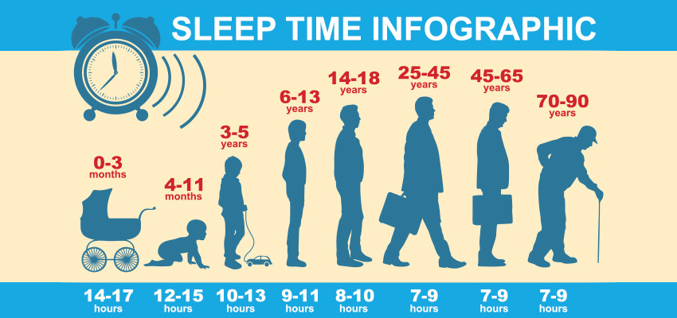

Sleep is extremely vital for the human body to function well. Here is how much sleep you need based on your age:
*Therefore, try to create a good sleep schedule and prepare a good sleeping environment before bedtime to attain the rest that your body needs : )*